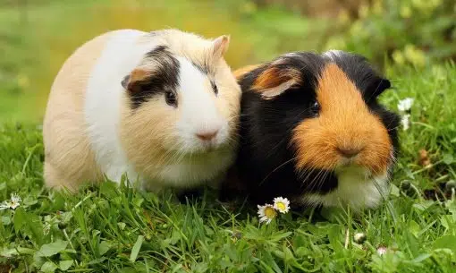

At PurrPets, we believe every Guinea Pig deserves a "Bestie." They are herd animals that communicate through a complex language of whistles, purrs, and chutts.

| Feature | The Lone Piggie | The Bonded Pair |
|---|---|---|
| Confidence | Hides more, very timid. | Bolder explorers (Follow the leader!). |
| Activity | Sedentary, prone to obesity. | Playful "chase" games and zoomies. |
| Vocals | Often silent. | Frequent "wheeking" and "chutting." |
| Mental Health | Higher stress levels. | Constant companionship and security. |
Introducing two strangers requires PurrPets patience. You can't just throw them in a cage together! We recommend:
Don't worry—your Guinea Pigs will still love you! To bond with them, try "Floor Time." Sit on the floor with some lettuce and let them crawl over you. They are much less afraid of humans when you aren't reaching down like a giant hawk from the sky.